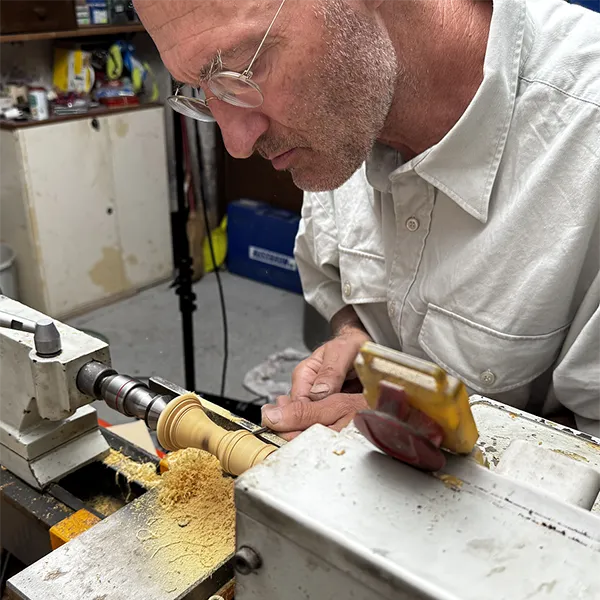

Christoph Brandner

Having played the oboe for many years, it was almost natural for me to make wind instruments one day.
My path was not a straight one, however; on the contrary, it involved many detours. I nevertheless hope that these detours, far from having harmed my practice of this craft, may enrich the making of my instruments and leave their mark on its timbre.
Woodwind making is a craft with no real apprenticeship path. For my part, I was able to benefit from the sound advice, the expert hands and the lifetime of experience of the instrument maker Denise Rutishauser, who showed me the essentials of this trade. I was also able to draw several times on the sound advice and the shared knowledge of Philippe Laché.